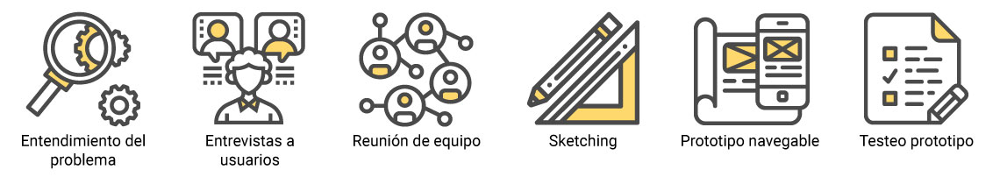
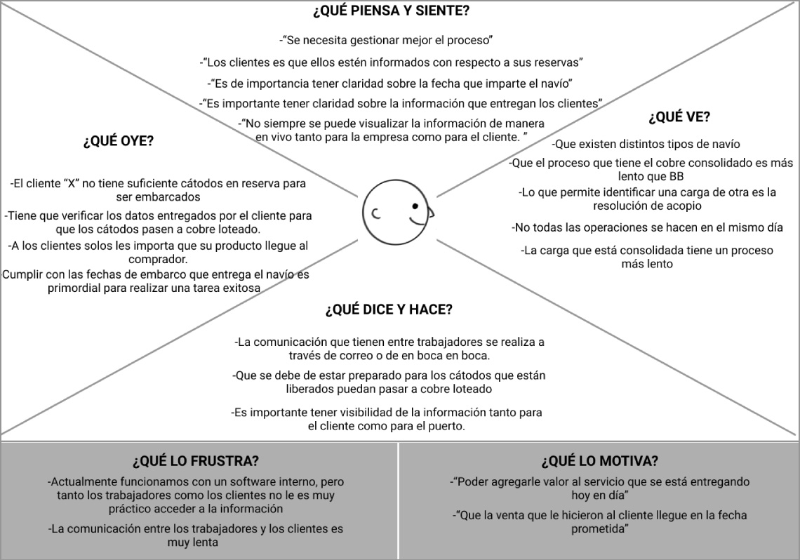
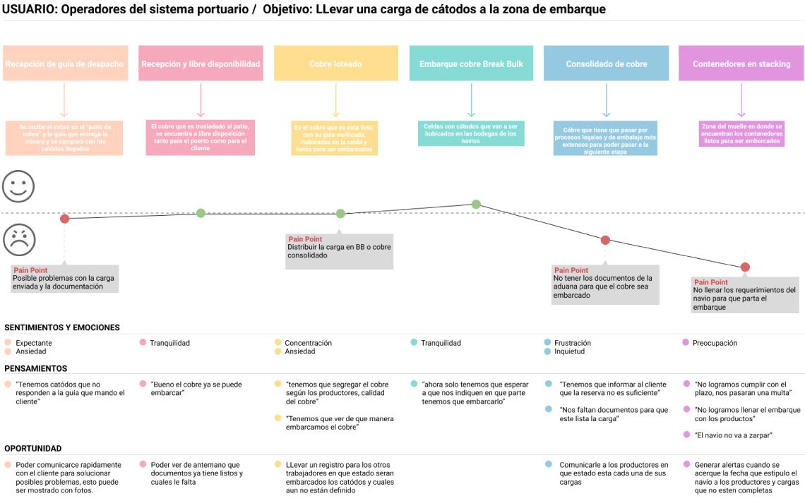
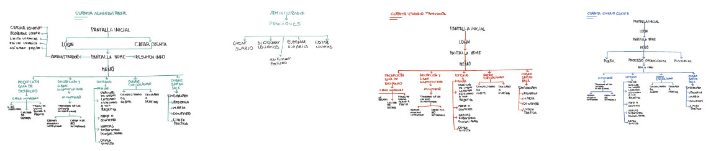
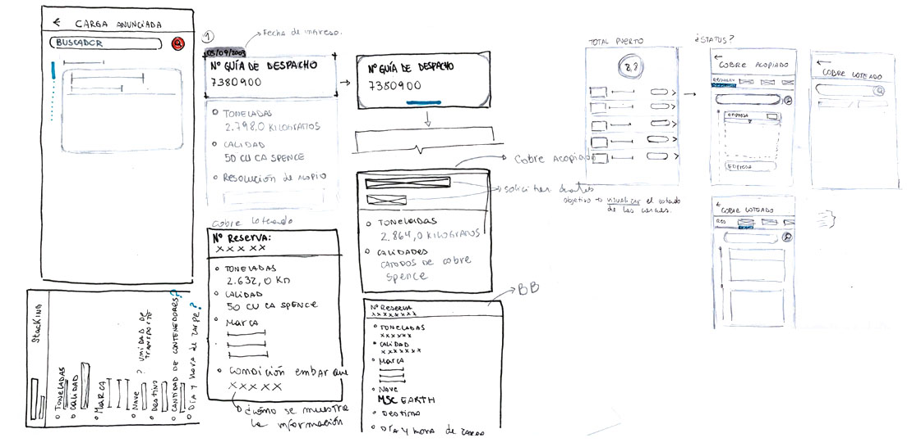
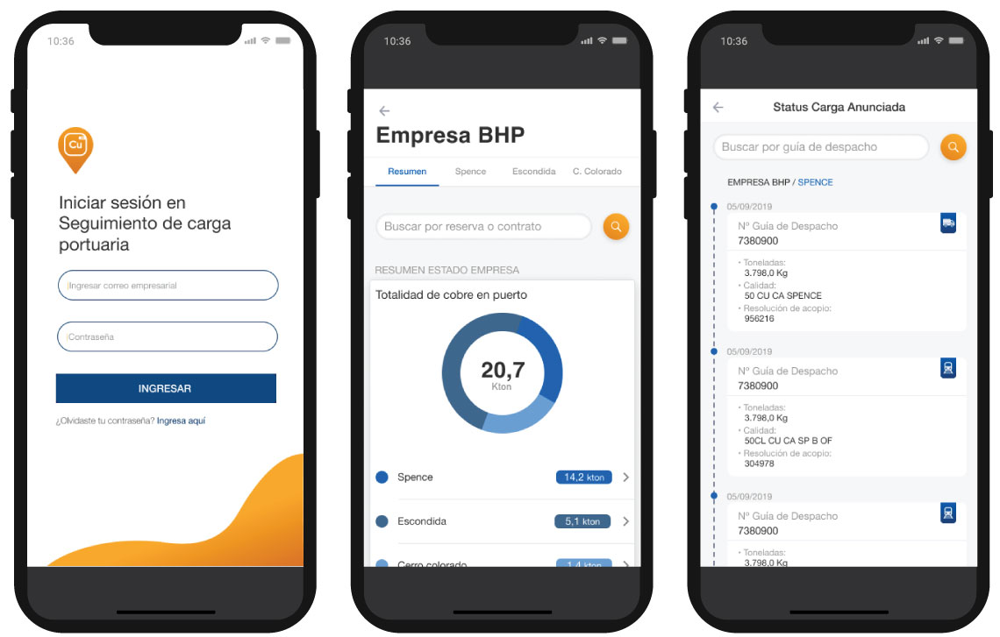

Sobre el proyecto
Puerto Angamos, Seguimiento de carga portuaria, una aplicación móvil y web, para la visualización en tiempo real de los estados de la carga recibida en el puerto.
Tiempo de trabajo: 3 Semanas.
Mi rol: Entrevista con usuarios, observación contextual, proceso de ideación, mapa de empatía, customer journey map, prototipado de alta en Adobe Figma.
Trabajo multidisciplinario entre Frontend y UX designer
Desafío
Como diseñadora UX/UI se me solicito diseñar una aplicación móvil y web responsiva que muestren la información del puerto tanto para los trabajadores como para los clientes del puerto, según las necesidades que correspondan a cada uno.
Necesidades del trabajador:
• Necesita que en todo momento el puerto lo mantenga actualizado sobre el estado de su cargamento de cobre.
Necesidades del cliente:
• El trabajador del puerto necesita tener a su alcance información de sus tareas y responsabilidades sobre los cargamentos de cobre que lleguen al pueto, con el fin de facilitar su trabajo.
Proceso de Investigación
Para poder realizar el diseño de la aplicación y sitio web fue necesario comprender el funcionamiento interno del puerto, cómo llega el cobre al lugar, cuáles son los procesos por el que pasa el cobre para subirlos a una embarcación, cómo se lleva a cabo este proceso, entre estas y muchas otras preguntas debieron ser resueltas antes de poder presentar alguna propuesta.
Mapa de empatía
{kind=link}
Investigación
A través del Customer Journey Map analizamos el proceso actual de cómo se lleva una carga de cátodos a la zona de embarque y las dificultades que presentan los trabajadores para llevar a cabo esta tarea y así poder visualizar las oportunidades de mejorar esta experiencia en la plataforma web y app.
{kind=link}
¿How might we?
Primeros acercamientos
{kind=link}
Sketch
{kind=link}
Prototipo
{kind=link}
Conclusión y aprendizajes
A nivel personal agradezco la oportunidad de encargarme de este proyecto, gracias a esto pude conocer el complejo sistema que tienen los puertos para clasificar, almacenar y trasladar de un punto a otro el cobre que posteriormente viajaría en barco. Poder diseñar una propuesta que muestre en tiempo real en qué proceso de embarcación se encuentra el cobre y con la información entregada facilitar la comunicación entre el puerto y sus clientes como también el trabajo en terreno. Esto fue uno de los principales desafíos en el diseño, ya que como siempre se debe de considerar lo que cada uno de los tipos de usuario necesita, pero al mismo tiempo fue lo que hizo que el proyecto se volviera muy interesante.